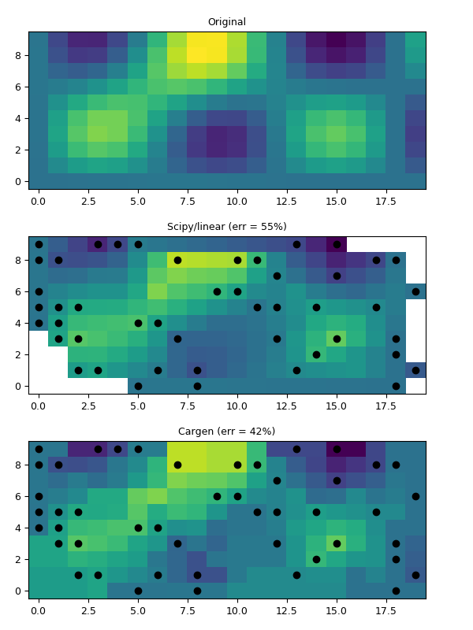

1.3.3.6.3.2.1. Interpolation vers grille régulière¶
Voir griddata().

Des points aléatoires sont interpolés vers une grille régulière grâce à la libraire NatGrid (au milieu), et par krigeage (en bas).
# %% Imports
import numpy as N, pylab as P
from vcmq import griddata, meshbounds, savefigs
# %% Setup a rectangular grid and data
xr = N.arange(20.)
yr = N.arange(10.)
xxr, yyr = N.meshgrid(xr, yr)
xrb, yrb = meshbounds(xr, yr)
zzr = (N.sin(xxr*N.pi/6)*N.sin(yyr*N.pi/6) + \
N.exp(-((xxr-7.)**2+(yyr-7.)**2)/4.**2))*100.
zzr -= zzr.min()
vminmax=dict(vmin=zzr.min(), vmax=zzr.max())
# %% Build a random sample from gridded data
ij = N.unique((N.random.rand(50)*zzr.size).astype('i'))
xi, yi, zi = xxr.flat[ij], yyr.flat[ij], zzr.flat[ij]
# %% Interpolation on regular grid
# - natgrid
zirn = griddata(xi, yi, zi, (xr, yr), method='linear', ext=True, sub=6)
# - ifremer cargen
zirk = griddata(xi, yi, zi, (xr, yr), method='carg')
# %% Plots
P.figure(1, figsize=(6, 8))
P.subplots_adjust(hspace=.3, bottom=.05, top=.95, left=.06)
# - original
P.subplot(311)
P.pcolor(xrb, yrb, zzr, **vminmax)
P.xlim(xrb.min(), xrb.max()) ; P.ylim(yrb.min(), yrb.max())
P.title('Original')
stdref = zzr.std()
# - linear interp
P.subplot(312)
P.pcolor(xrb, yrb, zirn, **vminmax)
P.plot(xi, yi, 'ko')
P.xlim(xrb.min(), xrb.max()) ; P.ylim(yrb.min(), yrb.max())
P.title('Scipy/linear (err = %02i%%)'%((zzr-zirn).std()*100/stdref))
# - ifremer cargen interp
P.subplot(313)
P.pcolor(xrb, yrb, zirk, **vminmax)
P.plot(xi, yi, 'ko')
P.xlim(xrb.min(), xrb.max()) ; P.ylim(yrb.min(), yrb.max())
P.title('Cargen (err = %02i%%)'%((zzr-zirk).std()*100/stdref))
savefigs(__file__)
P.close()